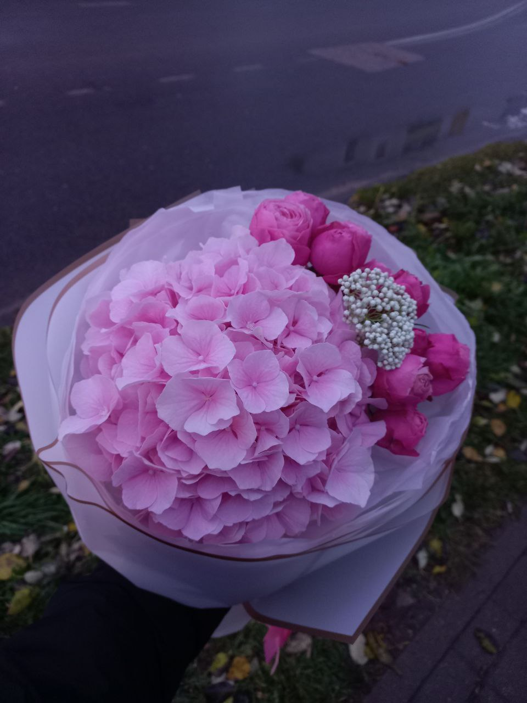
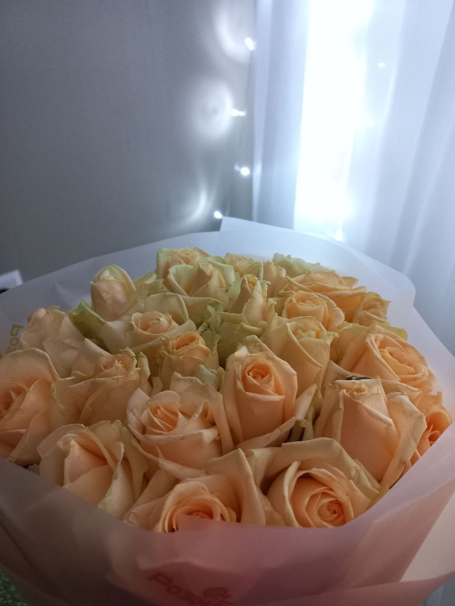

|
Розочки |
 |
Магазин цветов |
 |
Доставка и самовывоз |
|
Накануне важного события всегда задаешься вопросом – где купить цветы в Минске, чтобы доставка цветов была в нужное место и в нужное время? Среди цветочных магазинов иногда не просто найти именно тот, где устроит все - приятное общение, компетентные сотрудники, высокое качество обслуживания и качество цветов. |
Получить консультацию и уточнить наличие товара можно по телефону +375 (44) 55 97 569 |
Оформляя заказ букета с доставкой для близкого человека, вы получаете не просто свежие, невероятно пахнущие цветы, но и закладываете особо ценные воспоминания, греющие душу даже в самую ненастную погоду. Ведь ни для кого не секрет, что подобные поступки говорят громче слов. | |||
|
Оформить заказ букета или композиции в Минске на просторах нашего онлайн магазина - дело пары минут, но искорки в глазах и тепло в душе - на долгое время. Магазин цветов в Минске Розочки предоставляет уникальную возможность для выражения самых теплых чувств и эмоций. |
|
||||
|
Процесс оформления онлайн покупки живых цветов или букетов от цветочной лавки Розочки всегда связан с индивидуальным подходом и учетом всех ваших пожеланий. Наши опытные, чуткие флористы улавливают всю ту энергетику и тепло, исходящие от человека, искренне желающего преподнести цветочный сюрприз своим близким, окрашивая их день в более насыщенные и эмоциональные оттенки. |
||||